Home
About
Gallery
Topic
Alwalkeria
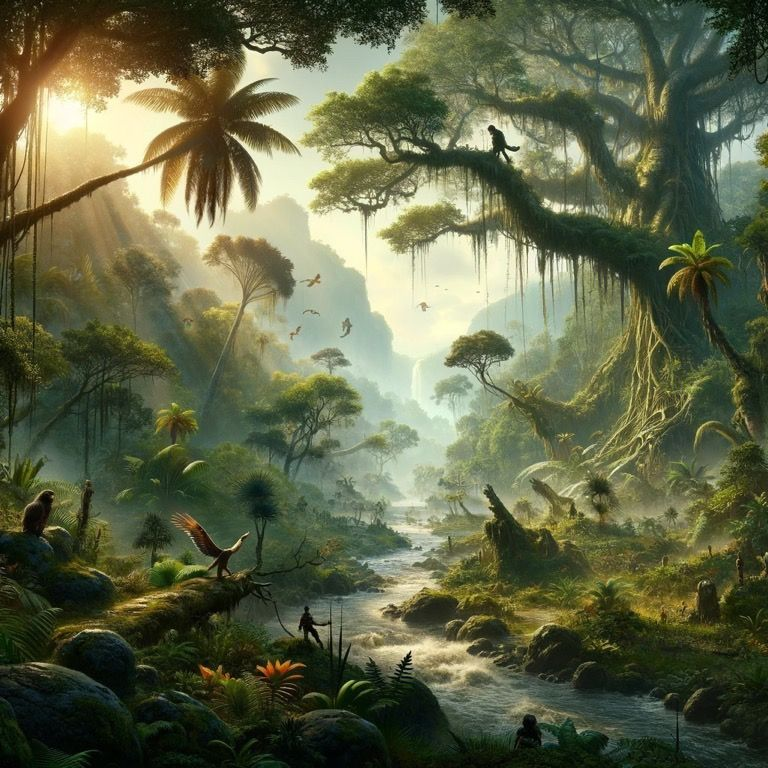
View Description
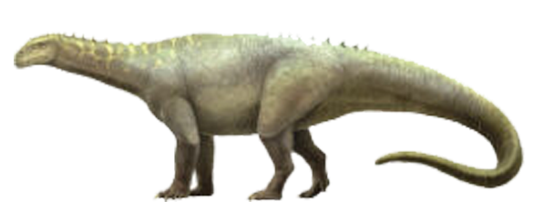
Lessemsaurus
View Description
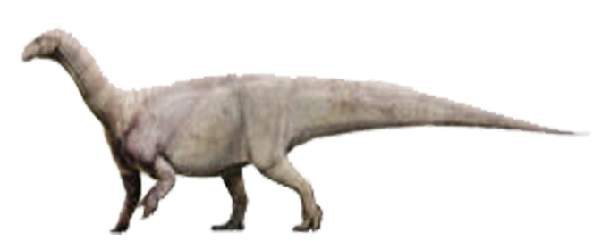
Melanorosaurus
View Description
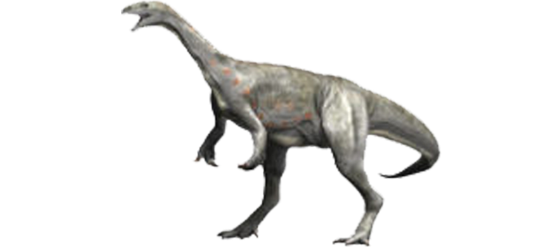
Asylosaurus
View Description
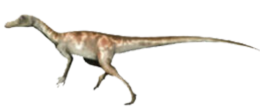
Chindesaurus
View Description
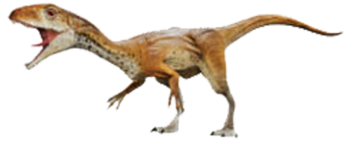
Daemonosaurus
View Description
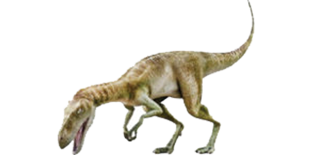
Staurikosaurus
View Description
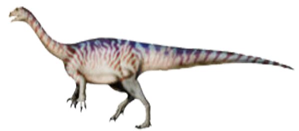
Coloradisaurus
View Description
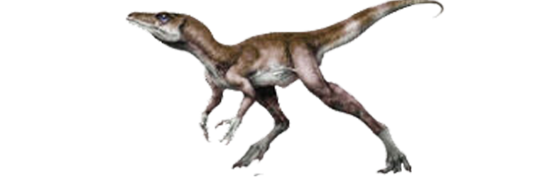
Eoraptor
View Description
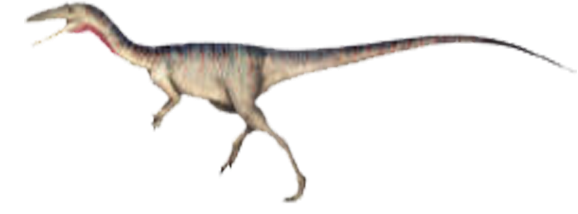
Camposaurus
View Description
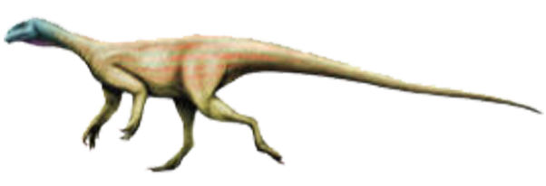
Thecodontosaurus
View Description
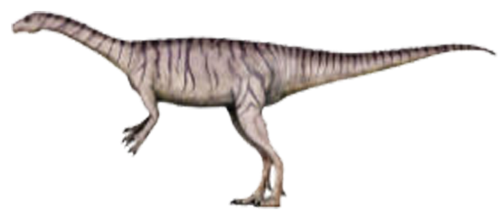
Guaibasaurus
View Description
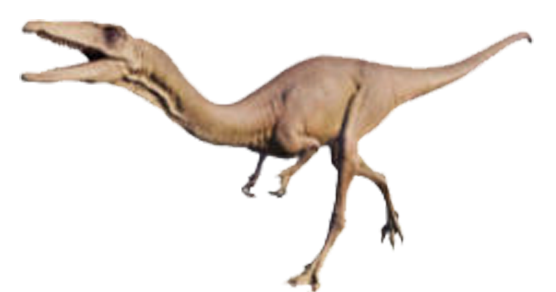
Coelophysis
View Description
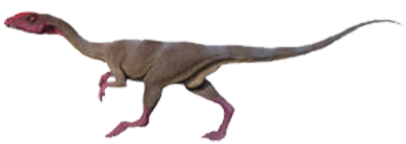
Liliensternus
View Description
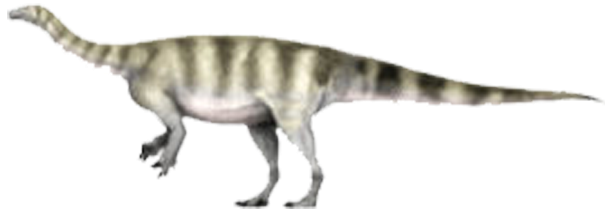
Mussaurus
View Description
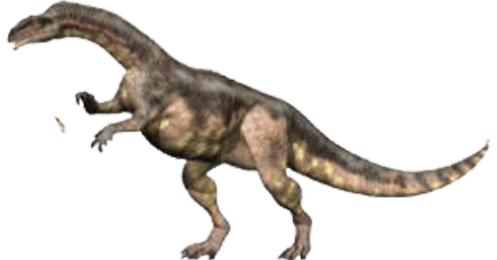
Plateosaurus
View Description
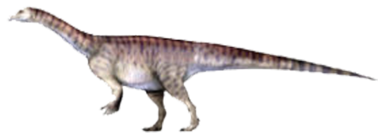
Riojasaurus
View Description
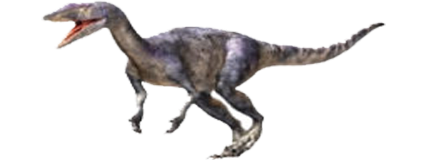
Gojirasaurus
View Description
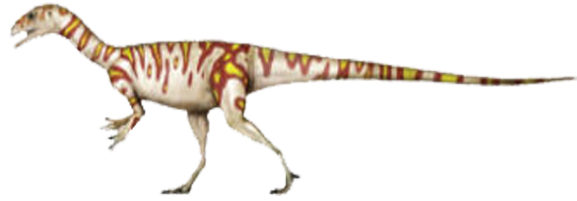
Pantydraco
View Description
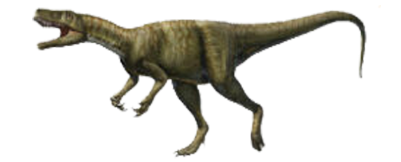
Herrerasaurus
View Description
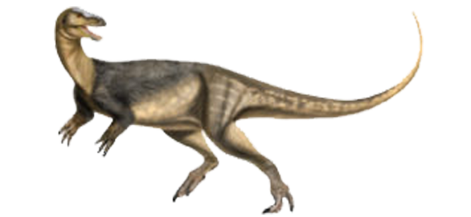
Saturnalia
View Description
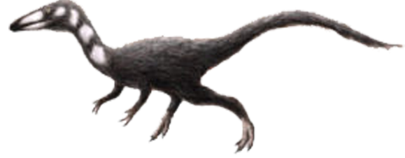
Procompsognathus
View Description
Description
×
Description content goes here...